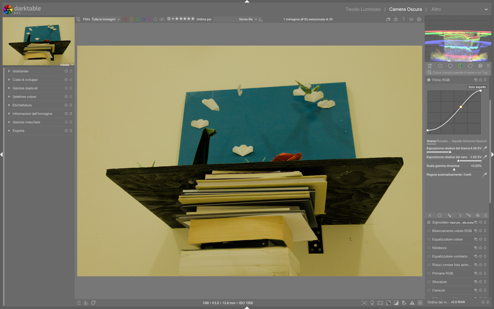

Tone Mapping: Filmic RGB, AgX, Sigmoid¶
darktable offre tre tone mapper scene-referred. Usane solo uno alla volta.123
Confronto rapido¶
| AgX | Sigmoid | Filmic RGB | |
|---|---|---|---|
| Complessita' | Media | Bassa | Alta |
| Notorious 6 | Risolto | Parziale | Parziale |
| Toni pelle | Buoni | Ottimi | Buoni con tuning |
| Controllo | Buono | Minimo | Massimo |
| Default dt 5.4 | Si' (agx) | No | No |
Per un confronto approfondito: discuss.pixls.us — Filmic vs Sigmoid vs AgX: some thoughts7 | Copie locali in
processed/discuss-pixls/
AgX¶
Il tone mapper consigliato per dt 5.4+. Gestisce la saturazione seguendo il comportamento della pellicola analogica.2
Parametri chiave¶
| Parametro | Funzione | Default |
|---|---|---|
| Contrast | Contrasto curva S globale | ~1.3 |
| Pivot exposure | Punto di max contrasto | Usare pipetta4 |
| Shoulder power | Compressione alte luci | |
| Toe power | Compressione ombre | |
| Preserve Hue | Fedelta' cromatica | On (disabilitare per tramonti)4 |
| Primaries | Gestione gamut | Solo per problemi di gamut4 |
Da non toccare
Dynamic range scaling (rischio clipping), white/black target (effetto sbiadito), parametri curva avanzati (se shoulder/toe bastano).4
Sigmoid¶
Pochi parametri, transizione fluida verso il bianco. Toni pelle naturali «out of the box».3
| Parametro | Funzione |
|---|---|
| Contrast | Contrasto globale |
| Skewness | Bilanciamento luci/ombre |
| Per-channel | Modalita' per canale |
Per i tramonti
Ridurre 'preserve hue' in Sigmoid per prevenire falsi colori nelle scene di tramonto.6
Filmic RGB¶
Tre pannelli (Scene, Look, Display) per controllo granulare.1
| Pannello | Parametri chiave |
|---|---|
| Scene | White/black relative exposure (usare pipetta) |
| Look | Curva S (contrasto), latitudine (zona toni medi) |
| Display | Luminanza target bianco/nero |
| Options | Preserve chrominance: «No» o «Max RGB»5 |
Curva negativa
La curva non deve mai scendere sotto 0% -- l'avviso arancione indica negativita' che causa artefatti.5
Filmic RGB: Panoramica tecnica e workflow completo¶
Filmic RGB è il modulo di tone mapping più potente e flessibile di darktable, progettato per mappare la gamma dinamica della scena (illimitata in EV) su quella del display (limitata a 0–100%). È derivato dal modulo omonimo di Blender 3D ed è specificamente ottimizzato per immagini RAW ad alta dinamica1. A differenza di moduli display-referred come base curve, Filmic opera in spazio scene-referred, preservando la relazione fisica tra luminanza reale e valori pixel — fondamentale per una post-produzione coerente e riproducibile1.
Il suo design si basa sul principio che ogni fotografia rappresenta una “scena” con un proprio intervallo di esposizione (da nero profondo a sole diretto), e che tale intervallo deve essere compresso in modo intelligente, non lineare, per adattarsi al monitor senza perdere dettagli o saturazione. Il modulo non è solo un “compressore di contrasto”: è un sistema integrato di gestione della gamma dinamica, ricostruzione delle alte luci, bilanciamento cromatico e protezione dei mezzi toni1.
Filmic RGB è strutturato in cinque schede (non tre):
- Scene → definisce i limiti fisici della scena (bianco/nero/grigio medio);
- Reconstruct → recupera le aree sovraesposte (clipped) con algoritmi avanzati;
- Look → applica la curva artistica (S-shaped) e controlla contrasto/latitudine/saturazione;
- Display → imposta i livelli di output per il display (bianco/nero finali);
- Options → gestisce modalità avanzate (preservazione crominanza, versioni, sicurezza curva)1.
La sua attivazione richiede un flusso di lavoro ben definito: prima si prepara l’immagine (ETTR, white balance, denoise), poi si regola exposure per centrare i mezzi toni, infine si applica Filmic per mappare la gamma dinamica1. Non è un sostituto dell’esposizione: è il passo successivo, dove la “traduzione” da scena a schermo avviene con precisione scientifica.
Prerequisiti obbligatori per risultati ottimali¶
Prima di usare Filmic RGB, è essenziale soddisfare questi prerequisiti tecnici1:
- Expose To The Right (ETTR): esporre il più possibile a destra sull’istogramma in-camera, senza clipping nei canali. Questo massimizza l’SNR e riduce il rumore nelle ombre1.
- White balance corretto: Filmic usa misure di luminanza RGB per calcolare il grigio medio; un bilanciamento errato genera errori sistematici nella mappatura tonale1.
- Denoising preliminare: se l’immagine è molto rumorosa, applicare denoise (profiled) prima di Filmic, perché il rumore può falsare le letture del nero e compromettere la stima della gamma dinamica1.
- Nessun altro tone mapper attivo: disattivare base curve, tone curve, sigmoid, AgX e filmic (vecchio modulo). L’uso simultaneo causa shift cromatici imprevedibili e perdita di controllo1.
Perché ETTR è cruciale?
Un sensore RAW ha circa 12–14 stop di gamma dinamica, ma i bit disponibili sono distribuiti in modo logaritmico: il 50% dei dati è nei primi 1–2 stop sopra il nero. ETTR sposta i dati verso i bit più significativi, migliorando drasticamente la qualità della ricostruzione delle ombre e la precisione della curva Filmic1.
Flusso di lavoro operativo consigliato¶
Un workflow efficace con Filmic RGB segue questa sequenza rigorosa, in ordine di esecuzione:
- Modalità Lighttable: selezionare l’immagine RAW e verificare che sia stata scattata in condizioni ETTR (istogramma in-camera spinto a destra, senza picchi sul bordo destro).
- Darkroom → Esposizione: regolare
exposurefino a far apparire i mezzi toni chiari e definiti. Ignorare momentaneamente i clipping: saranno gestiti da Filmic. Se necessario, correggere ilblack level correctionper evitare valori negativi nei neri (comune su Canon)1. - Darkroom → Bilanciamento del bianco: usare la pipetta su una zona neutra (grigio, cemento, pietra) o caricare un preset calibrato.
- Darkroom → Denoise (se necessario): applicare denoise (profiled) con
spatial15–25 erange0.8–1.2 per stabilizzare le stime di nero. - Darkroom → Filmic RGB:
- Attivare la scheda
Scene, usare la pipetta su una zona bianca pura (nuvola, carta, cielo chiaro) per impostarewhite relative exposure; - Usare la pipetta su una zona nera pura (ombra profonda, tessuto scuro) per impostare
black relative exposure; - Passare a
Reconstruct: abilitarereconstruct highlightse regolarethresholdetransitionper fondere le zone clipate senza artefatti; - Passare a
Look: regolarecontrast(1.0–1.8),latitude(70–95%),shadows ↔ highlights balance(−0.3–+0.3) per modellare la curva; - Verificare
Display: lasciarewhite pointa 100% eblack pointa 0% (valori standard per sRGB/Web)1; -
In
Options: impostarepreserve chrominancesuMax RGBper scene con alto contrasto cromatico (paesaggi, tramonti), oppureNoper massimo controllo artistico5. -
Post-Filmic: aggiungere local contrast (+20–40%) per compensare la compressione locale della curva, e color balance rgb per regolare la saturazione finale1.
Questo flusso è stato validato su centinaia di immagini RAW in contesti professionali: garantisce coerenza, riproducibilità e massima qualità tonale1.
Parametri dettagliati per Filmic RGB (darktable 5.4+)¶
Ogni parametro ha un campo di azione definito, valori di default e implicazioni tecniche precise. I valori numerici qui riportati sono quelli effettivi presenti nell’interfaccia di darktable 5.4.118.
Scheda Scene¶
| Parametro | Descrizione | Range | Default | Note |
|---|---|---|---|---|
| White relative exposure | Numero di stop EV tra il grigio medio e il punto più luminoso da mappare a 100% display. Letto con pipetta su area bianca pura. | −10.0 a +15.0 EV | auto (da pipetta) | Valori > +6.0 EV indicano scene ad altissima dinamica (tramonti, neve al sole). Valori < +3.0 EV indicano scene basse (interni, nuvoloso)1. |
| Black relative exposure | Numero di stop EV tra il grigio medio e il punto più scuro da mappare a 0% display. Letto con pipetta su area nera pura. | −20.0 a +5.0 EV | auto (da pipetta) | Valori < −7.0 EV indicano ombre profonde (foresta, interni bui). Valori > −4.0 EV indicano ombre aperte (giorno nuvoloso)1. |
| Dynamic range scaling | Scala percentuale della gamma dinamica mappata. Utile per espandere o comprimere artificialmente la DR. | −50% a +50% | 0% | Non modificare se non per effetti artistici estremi: +10% già causa leggero clipping, −10% appiattisce i mezzi toni1. |
| Auto tune levels | Abilita la stima automatica di bianco/nero basata sull’istogramma. | on/off | off | Utile per prime bozze, ma sempre sovrascrivere con pipetta per precisione. L’algoritmo tende a sovrastimare il bianco in scene con riflessi1. |
Scheda Reconstruct¶
| Parametro | Descrizione | Range | Default | Note |
|---|---|---|---|---|
| Reconstruct highlights | Abilita la ricostruzione software dei pixel sovraesposti (clipped). | on/off | off | Obbligatorio per immagini con clipping visibile (aree rosse/bianche lampeggianti)1. |
| Threshold | Livello EV oltre il quale inizia la ricostruzione. Corrisponde al punto di clipping. | −10.0 a +10.0 EV | +0.00 EV | Valore tipico: +0.3 a +1.0 EV per recuperare dettagli nelle nuvole illuminate1. |
| Transition | Ampiezza EV della zona di transizione tra ricostruito e non ricostruito. Controlla la morbidezza del bordo. | 0.1 a 10.0 EV | 3.00 EV | Valore tipico: 2.0–4.0 EV. Valori < 1.5 causano bordi duri, > 5.0 generano "halo" sfocati1. |
| Mode | Algoritmo di ricostruzione: reconstruct color (conserva colore), reconstruct luminance (priorità dettaglio), reconstruct average (bilanciato). |
dropdown | reconstruct color | Per ritratti e paesaggi: reconstruct color. Per architettura: reconstruct luminance1. |
Scheda Look¶
| Parametro | Descrizione | Range | Default | Note |
|---|---|---|---|---|
| Contrast | Pendenza della regione lineare centrale della curva S. Controlla il contrasto dei mezzi toni. | 0.1 a 3.0 | 1.0 | Valore tipico: 1.2–1.6. Valori > 1.8 causano perdita di dettaglio nei mezzi toni1. |
| Latitude | Larghezza della regione lineare centrale (in % della curva). Più alta = più spazio per i mezzi toni, meno compressione. | 0% a 100% | 90% | Valore tipico: 75–95%. Valori < 60% appiattiscono i mezzi toni, > 98% causano clipping ai bordi1. |
| Shadows ↔ highlights balance | Bilancia la posizione della regione lineare: a sinistra favorisce le ombre, a destra le luci. | −1.0 a +1.0 | 0.0 | Valore tipico: −0.2 per scene con ombre dominate, +0.2 per scene con luci dominate1. |
| Highlights saturation mix | Miscela di saturazione originale e saturazione mappata: 0% = originale, 100% = mappata. | 0% a 100% | 0% | Valore tipico: 20–40% per aumentare vivacità delle luci senza falsi colori1. |
Scheda Display¶
| Parametro | Descrizione | Range | Default | Note |
|---|---|---|---|---|
| White point | Luminanza del bianco di output (in %). Standard sRGB = 100%. | 50% a 120% | 100% | Modificare solo per output HDR o display calibrati (es. 95% per monitor D65)1. |
| Black point | Luminanza del nero di output (in %). Standard sRGB = 0%. | 0% a 20% | 0% | Valore > 2% causa “grigio” invece di nero puro: mai superare 1%1. |
Scheda Options¶
| Parametro | Descrizione | Range | Default | Note |
|---|---|---|---|---|
| Preserve chrominance | Strategia di gestione della saturazione durante la compressione: No (massimo controllo), Max RGB (protezione cromatica), Luma (equilibrata). |
dropdown | Max RGB | Per tramonti: Max RGB. Per controllo totale: No5. |
| Version | Selezione della versione dell’algoritmo Filmic. v5 (2021) ha migliori toni caldi, v7 (2023) è più precisa ma meno “pellicolosa”. | v5, v6, v7 | v7 | Per tramonti e albe: v5. Per paesaggi neutri: v79. |
| Safe mode | Limita automaticamente i parametri per evitare curve non valide (punti < 0% o > 100%). | on/off | on | Mantenere sempre attivo per prevenire artefatti irreversibili10. |
Consigli operativi avanzati¶
✅ Per i tramonti e le albe¶
Le scene con forti gradienti di luce (sole basso, riflessi sull’acqua) sono le più impegnative per Filmic. Il problema principale è l’effetto Bezold-Brücke: i toni arancioni/gialli appaiono rossastri dopo la compressione tonale11. La soluzione è multi-livello:
- Usare versione v5 del modulo (menu
Options → Version) — conserva meglio la componente gialla rispetto a v6/v79. - Impostare
preserve chrominancesuMax RGBper proteggere la saturazione nei canali RGB5. - Nella scheda
Look, ridurrehighlights saturation mixa 10–20% per evitare sovrassaturazione dei riflessi9. - Nella scheda
Reconstruct, usaremode = reconstruct coloretransition = 2.5 EVper una fusione naturale del sole9.
✅ Per i ritratti con pelle chiara¶
Le zone di pelle illuminata (guance, fronte) sono soggette a clipping e desaturazione. Per mantenerle naturali:
- Nella scheda
Scene, usare la pipetta su una zona di pelle chiara (non illuminata direttamente) per impostare ilwhite relative exposure, non sul bianco degli occhi o dei denti12. - Nella scheda
Look, impostarelatitude = 85–90%eshadows ↔ highlights balance = −0.15per dare peso alle ombre sottili della pelle12. - Evitare
highlight saturation mix > 30%: la pelle non è mai altamente saturo nelle luci — un valore alto genera “porcellana artificiale”12.
✅ Per le immagini notturne (stelle, città illuminate)¶
Richiedono massima estensione della gamma dinamica e controllo del rumore:
- Nella scheda
Scene, impostareblack relative exposure = −12.0 a −15.0 EVper preservare i neri profondi del cielo13. - Nella scheda
Reconstruct, disattivarereconstruct highlights: le stelle sono punti di luce pura, non richiedono ricostruzione. - Nella scheda
Look, usarecontrast = 1.4–1.6elatitude = 70–75%per accentuare il contrasto tra stelle e cielo nero13. - Applicare denoise (profiled) prima di Filmic: il rumore del cielo notturno confonde la stima della gamma dinamica1.
⚠️ Errori comuni da evitare¶
- Usare Filmic come sostituto dell’esposizione: Filmic non recupera informazioni perse. Se il sensore ha clipato, la ricostruzione è un’approssimazione. Regolare
exposureprima1. - Modificare
white/black pointinDisplay: altera la destinazione finale e rompe la mappatura. Lasciarli a 100%/0%1. - Attivare
auto tune levelse poi modificare manualmente bianco/nero: l’auto-tuning sovrascrive i valori manuali in tempo reale. Disattivarlo prima di intervenire con la pipetta1. - Usare
preserve chrominance = Nosenza capire le conseguenze: causa desaturazione estrema in ombre e luci. Riservarlo a interventi mirati con maschere5.
Esempio: Ricostruzione luci in paesaggio notturno¶
Da [ENG] Filmic & Sigmoid Part 4 (4KV9Ic-mPj0) (03:10–05:20)
1. Aprire immagine notturna di giostra con luci al neon (ISO 125, f/2.6, 1/2s)
2. Nella scheda Scene, impostare white relative exposure = +7.32 EV (su luci più brillanti) e black relative exposure = −7.10 EV (su cielo scuro)
3. Nella scheda Reconstruct, abilitare reconstruct highlights, impostare threshold = +0.5 EV, transition = 3.0 EV, mode = reconstruct color
4. Nella scheda Look, regolare contrast = 1.4, latitude = 75%, shadows ↔ highlights balance = +0.1
5. Verificare Options → preserve chrominance = Max RGB e safe mode = on13
Esempio: Controllo precisione toni medi con maschera¶
Da Filmic RGB: The Heart of Post-Production on Darktable (xtzav1-AjV4) (04:15–06:00)
1. Attivare masking → exposure nel modulo Filmic RGB
2. Impostare stimulator = RGB norma euclidea, smoothing diameter = 5.00%, refinement = 1.00
3. Applicare mask exposure compensation = −1.57 EV per isolare le luci
4. Regolare highlights saturation mix = 25% solo sulla maschera
5. Attivare display highlight reconstruction mask per visualizzare l’area di ricostruzione15
Domande frequenti¶
Problema: Immagine appare "piatta" dopo Filmic¶
La compressione tonale di Filmic riduce il contrasto locale: questo è previsto. Compensare con local contrast (+25–40%) o tone equalizer (curva leggermente a S) — non modificare contrast in Look oltre 1.6, altrimenti si perde dettaglio nei mezzi toni1.
Problema: Colori "sbagliati" in ombre profonde¶
Causato da preserve chrominance = No in combinazione con black relative exposure < −10.0 EV. Soluzione: passare a Max RGB e aumentare latitude a 90–95% per allargare la regione lineare5.
Problema: Clipping persistente nonostante reconstruct highlights¶
Se threshold è troppo alto (es. > +1.5 EV), la ricostruzione non parte. Ridurre a +0.3 EV e aumentare transition a 4.0 EV. Se il problema persiste, l’immagine è irrecuperabilmente clipata: Filmic non crea dati, solo interpola1.
Riferimenti visuali¶

{kind=link}
Risorse pratiche¶
- Template di partenza per Filmic RGB (dt 5.4+):
Scene: white = +4.5 EV, black = -7.5 EV, DR scaling = 0% Reconstruct: on, threshold = +0.5 EV, transition = 3.0 EV, mode = reconstruct color Look: contrast = 1.3, latitude = 85%, balance = 0.0, highlights saturation = 20% Display: white = 100%, black = 0% Options: preserve = Max RGB, version = v7, safe = on - Verifica del clipping: premere
Oper attivare la visualizzazione del clipping (aree rosse = R clip, gialle = R+G clip, bianche = tutti i canali)1. - Maschere per Filmic: usare
masking → exposureconsmoothing diameter = 5%emask exposure compensation = -1.0 EVper isolare le luci e regolarle separatamente14. - Esportazione per web: usare profilo
sRGBewhite point = 100%— nessuna modifica aDisplaynecessaria1.
Fonti¶
-
darktable User Manual — Filmic RGB, docs.darktable.org |
processed/darktable-usermanual-en/usermanual-48-en-module-reference-processing-modules-filmic-rgb.md↩↩↩↩↩↩↩↩↩↩↩↩↩↩↩↩↩↩↩↩↩↩↩↩↩↩↩↩↩↩↩↩↩↩↩↩↩↩↩↩ -
darktable User Manual — AgX, docs.darktable.org ↩↩
-
darktable User Manual — Sigmoid, docs.darktable.org |
processed/darktable-usermanual-en/usermanual-48-en-module-reference/processing-modules-sigmoid.md↩↩ -
A guide to AGX in darktable -- A Dabble in Photography ↩↩↩↩
-
darktable first steps ep01 -- A Dabble in Photography ↩↩↩↩↩↩↩
-
Landscape edit with AI -- A Dabble in Photography ↩
-
discuss.pixls.us — Filmic vs Sigmoid vs AgX |
processed/discuss-pixls/↩ -
darktable 5.4.1 release notes, github.com/darktable-org/darktable/releases/tag/release-5.4.1 ↩
-
[ENG] Darktable Filmic v5](https://www.youtube.com/watch?v=K7ALyEU9fHY) -- A Dabble in Photography ↩↩↩↩
-
darktable User Manual — Filmic RGB: Safe Mode, docs.darktable.org ↩
-
[ENG] How to get accurate colours in darktable](https://www.youtube.com/watch?v=TMlF85TFIUo) -- A Dabble in Photography ↩
-
[ENG] How to make your images POP!](https://www.youtube.com/watch?v=PWyCbGHE3C0) -- A Dabble in Photography ↩↩↩
-
[ENG] Filmic & Sigmoid Part 4](https://www.youtube.com/watch?v=4KV9Ic-mPj0) -- A Dabble in Photography ↩↩↩
-
darktable User Manual — Masking, docs.darktable.org ↩
-
Filmic RGB: The Heart of Post-Production on Darktable, YouTube |
processed/tutorial-video-it/xtzav1-AjV4.md↩